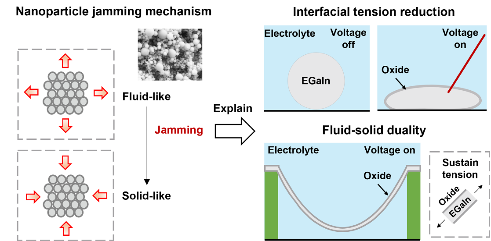
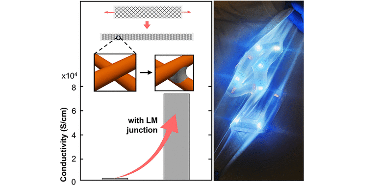
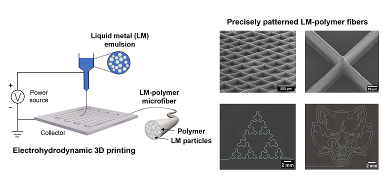
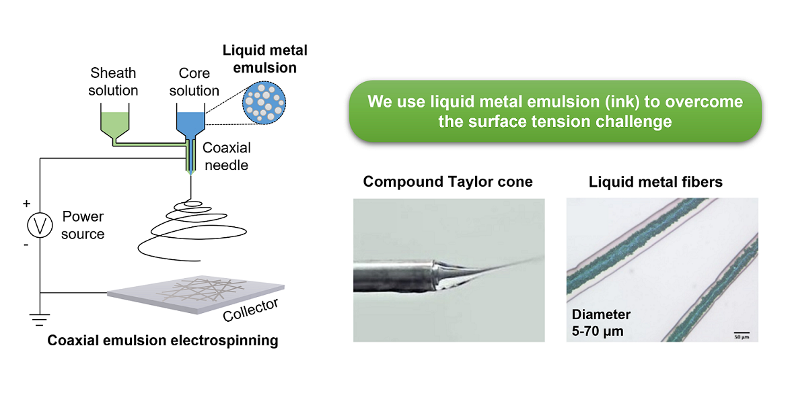
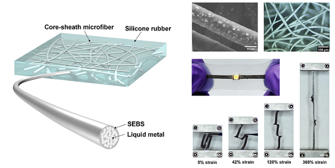
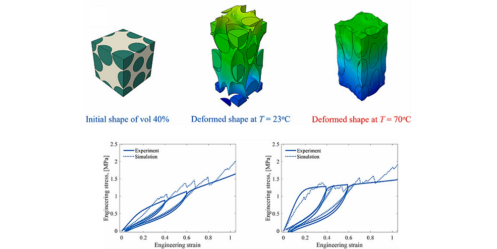
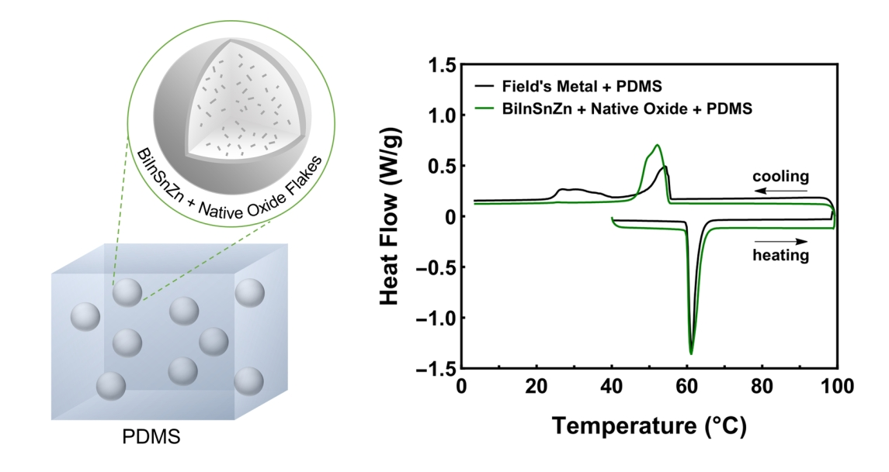
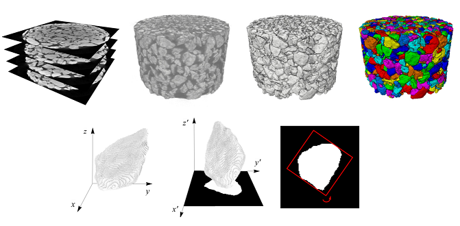

Welcome to my personal website! I am a postdoctoral researcher at the University of Virginia.
My work primarily focuses on the intersection of advanced manufacturing and material science, with a particular emphasis on developing soft composite materials and exploring their applications in soft electronics and sensors. My expertise spans design, prototyping, manufacturing, materials characterization, testing, and programming.
Email: jma80@binghamton.edu
Links: Google Scholar | LinkedIn
My research bridges mechanical engineering and material science.
Synthesizing and characterizing soft composites; utilizing liquid metal (such as EGaIn and Galinstan) embedded in polymer matrices to achieve highly stretchable and conductive materials.
Exploring the unique properties and processing of liquid metals with a melting point near room temperature, such as their electrochemical oxidation and supercooling behaviour.
Developing novel fabrication techniques to realize complex composite structures. Methods include EHD 3D printing, coaxial electrospinning, microfluidic wet spinning, and micromolding .
Designing and fabricating soft sensors, smart patches, and stretchable electronic components for advanced human-machine interaction and healthcare monitoring.
Developing custom programming tools to generate finite element mesh from 2D or 3D image data, bridging the gap between physical material and computational simulation.
Utilizing non-destructive X-ray CT and image-based analysis to characterize the microstructure of materials and investigate the failure mechanism







